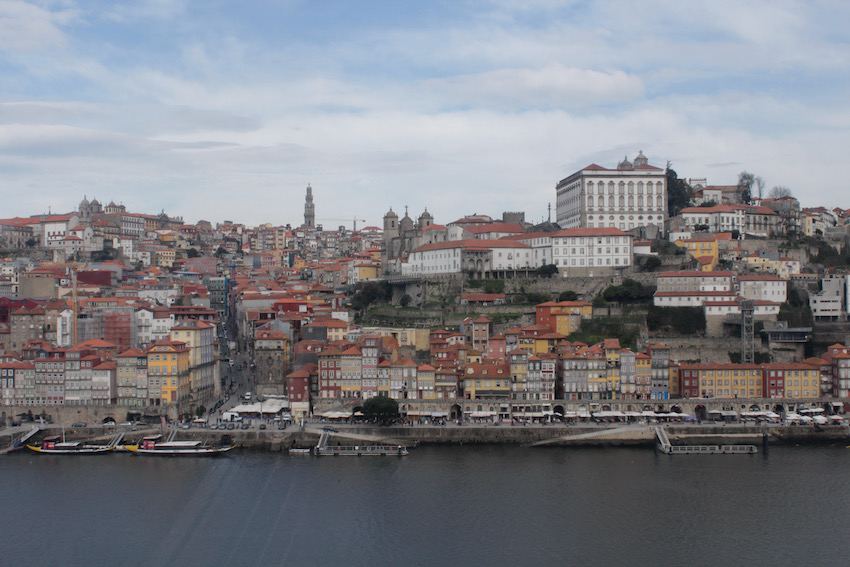
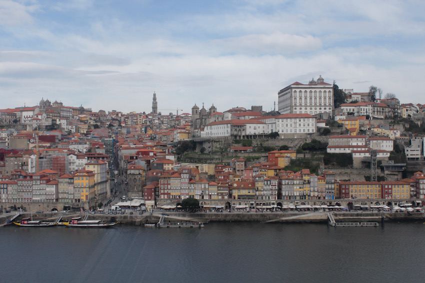

Hello Digital World!
I'm Tiago,
an environmental engineer with an interest for Web Development
(P.S. I'm building this website while I learn HTML, CSS and JavaScript.
Any feedback is much appreciated!)
About
My name is Tiago Brandao and I was born in the beautiful city of Porto (Portugal) in 1987. I've lived pretty much all my life across the river Douro, in a place called Vila Nova de Gaia, where I went to highschool. I own a Master's Degree in Environmental Engineering from the University of Porto - School of Engineering.
I have lived/worked in 3 countries: Portugal, United Kingdom and Australia. I have recently started a new adventure, having moved to Stockholm (Sweden) in February 2021.
My main field of expertise is the development of renewable energy projects.
I've recently decided to learn a new skill set and am diving into the depths of web development: HTML, CSS, JavaScript, etc.
 

Porto's skyline and Douro river
Education
I went to school at Escola Inês de Castro. I lived five minutes walking distance so I was never late!
I went to highschool at Colégio de Gaia where I obtained a Level III Certificate in Informatics and Computing. This was where I gave my first steps in programming.
I graduated in 2013 with a Master's Degree in Environmental Engineer from the Porto University - School of Engineering. Some of the main subjects of this course were:
- Environmental Management
- Water Treatment and Supply
- Hydrology and Hydraulics
- Design and Management of Waste Treatment Systems
- Management of Water Resources
- Climate Change and Air Quality
- Planning and Land-use Management
- Energy
My Master's thesis was undertaken at Sonae Modelo Continente (one of the biggest retail companies in Portugal) and was dedicated to the study of Waste Management – reduction of landfill parcel.
Work
I have been lucky enough to have been able to work in several different countries (you can
download my CV
here). The
following has been my journey so far...
Note: Country images not to scale.
Porto - PORTUGAL
-
Oct '12 ⇀ Jan '13:
Sonae MC - Intern at
Environment Department.
- Master thesis in Waste Management focusing on reducing the amount of solid waste going to landfill and finding the best available solution.
-
Sep '13 ⇀ May '14:
EDP Renewables - Intern at the
Department for Development of Renewable Energy Projects.
- Environmental monitoring of construction works of medium-scale wind and solar farms.
-
Sep '14 ⇀ Apr '16: 4 Green Developers (now
Infratec) - Renewable Energy Project
Developer.
- Achievement of Development Approval for several wind and solar farms in Portugal and Panama.
London - UNITED KINGDOM
-
Oct '16 ⇀ Aug '17: Bartender.
- I spent almost one year in London training as a bartender. This new skill set allowed me to quickly find a job on my next adventure: Melbourne - AUSTRALIA (see below).
Melbourne - AUSTRALIA
-
Oct '17 ⇀ Feb '18:
The Lui Bar - Cocktail
Bartender.
- Preparation and delivery of very high standard cocktails, working under the pressure of extremely busy periods and very careful grooming and presentation are just a few qualities a bartender at The Lui Bar must master.
-
Feb '18 ⇀ Oct '20:
BayWa r.e. - Project
Development Manager.
-
Projects involved and main tasks:
-
Diapur Wind Farm
and
Ferguson Wind Farm:
- Coordination of planning process
- Achievement of Development Approval
- Support during construction phase
-
Timboon West Wind Farm
and
Yawong Wind Farm:
- Support during construction phase
- Coordination of post-construction compliance
- Support during sell and handover processes
-
Bendigo Solar Farm:
- Coordination of planning process
- Achievement of Development Approval
-
Wimmera Plains Energy Facility:
- Greenfield prospection
- Layout design and optimization with the aid GIS software and WindPro
- Coordination of planning process including liaison with external consultants/authorities and preparation of all relevant planning documentation
- Lodgment of Planning Permit Application
-
Diapur Wind Farm
and
Ferguson Wind Farm:
-
Projects involved and main tasks:
Stockholm - SWEDEN
-
Feb '21 ⇀
- I've moved to Stockholm in February 2021 accompanying my partner who found a job here. I am now looking for a job myself and, in the meantime, I am undertaking Codecademy's online Web Development course.